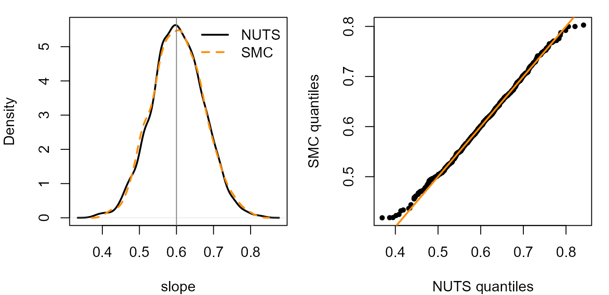

mode = "smc" fits a model with a sequential Monte Carlo
(SMC) sampler: a population of particles is moved step by step from a
reference distribution to the posterior. The weights collected along the
way estimate the log evidence
.
The path can also stop at the posterior tempered at inverse temperature
1 / log(n), and the draws recorded there give the widely
applicable Bayesian information criterion (WBIC) of Watanabe (2013), a
second estimate of the negative log evidence. This article fits a
Gaussian linear model whose posterior, evidence and WBIC have closed
forms, checks the SMC fit against all three, compares SMC with NUTS on a
Poisson model, and ends with nested models ranked by both estimates.
Installation is covered in Get started; the
inference tiers are described in Inference modes, and the evidence of a
Laplace fit, WAIC and LOO in Model
comparison.
-
Fit with
tulpa(..., mode = "smc", control = list(wbic = TRUE)). -
Check the draws with
coef(),summary()andconfint(). -
Read the log evidence with
logLik()and the criterion withwbic(). -
Rank candidate models with
compare_models().
How the sampler moves its particles
The sampler carries 1,000 particles along a path of distributions
from a reference to the posterior. The reference is fitted to the
posterior in two steps. A Pathfinder normal approximation starts a first
pass on a quarter of the particles, and a multivariate t distribution
with 3 degrees of freedom, located and scaled by the mean and covariance
of the population that pass ends with, is the reference of the run that
reports. At each step of that run the sampler picks the next point on
the path so that the effective sample size of the reweighted population
stays at half the particle count, resamples the particles to equal
weights, and moves them until they have decorrelated from the resampled
start. The draws a fit returns are the final population, equally
weighted, so the fit carries no chains and summary()
reports no Rhat.
With control = list(wbic = TRUE) the path has two legs.
The first ends at the tempered posterior
with
,
where the population is stored. The second leg raises the likelihood
power from
to 1, so the fit’s posterior draws are the same kind of draws as without
the option.
A model with a known posterior
The data are 200 observations of a response y with three
covariates: x (true slope 1.0), z (true slope
0.3) and w, which has no effect. The intercept is 0.5 and
the residual standard deviation is 0.8.
set.seed(3)
n <- 200
d <- data.frame(x = rnorm(n), z = rnorm(n), w = rnorm(n))
d$y <- 0.5 + 1.0 * d$x + 0.3 * d$z + rnorm(n, sd = 0.8)With the residual variance held at its true value,
phi = 0.64, and a normal prior with mean 0 and SD 2 on
every coefficient, the posterior of the coefficients is Gaussian and its
mean and covariance have a closed form. exact_posterior()
returns both.
phi <- 0.64
s <- 2
exact_posterior <- function(X, y, beta = 1) {
P <- beta * crossprod(X) / phi + diag(ncol(X)) / s^2
V <- chol2inv(chol(P))
m <- V %*% (beta * crossprod(X, y) / phi)
list(mean = drop(m), V = V)
}
X_xz <- model.matrix(~ x + z, d)
ep <- exact_posterior(X_xz, d$y)The SMC fit uses the same residual variance and prior.
seed fixes the sampler’s random stream;
n_particles is set to its default to make it visible.
fit_xz <- tulpa(y ~ x + z, data = d, family = "gaussian", mode = "smc",
phi = phi, beta_prior = list(mean = 0, sd = s),
control = list(wbic = TRUE, n_particles = 1000L,
seed = 1L))coef(summary()) gives the posterior mean and SD of each
coefficient from the draws. Next to the closed form:
sm <- coef(summary(fit_xz))
data.frame(row.names = rownames(sm),
smc_mean = round(sm[, "estimate"], 4),
exact_mean = round(ep$mean, 4),
smc_sd = round(sm[, "std.error"], 4),
exact_sd = round(sqrt(diag(ep$V)), 4))
#> smc_mean exact_mean smc_sd exact_sd
#> (Intercept) 0.4109 0.4137 0.0559 0.0566
#> x 0.9628 0.9624 0.0572 0.0578
#> z 0.3167 0.3183 0.0565 0.0550The SMC means differ from the exact ones by at most 0.0029 and the
SDs by at most 0.0015. The Monte Carlo standard error of a mean from
1,000 independent draws is about 0.002 here (an SD of 0.056 over the
square root of 1,000). The path of this fit had 3 steps, and
fit_xz$n_moves holds the number of moves made at each: 2,
3, 3.
SMC against NUTS
On a non-Gaussian model there is no closed form to check against, so
the reference is a NUTS fit (mode = "hmc") of the same
model. The data are 150 Poisson counts with intercept 0.3 and slope 0.6
on the log scale; both fits use the default prior.
set.seed(4)
dp <- data.frame(x = rnorm(150))
dp$y <- rpois(150, exp(0.3 + 0.6 * dp$x))
fit_smc <- tulpa(y ~ x, data = dp, family = "poisson", mode = "smc",
control = list(seed = 1L))
fit_nuts <- tulpa(y ~ x, data = dp, family = "poisson", mode = "hmc",
control = list(seed = 1L))
ci <- rbind(smc = confint(fit_smc)["x", ], nuts = confint(fit_nuts)["x", ])
ci
#> 2.5 % 97.5 %
#> smc 0.4736531 0.7436628
#> nuts 0.4670842 0.7411486Both 95% intervals for the slope cover 0.6. Their ends differ by 0.007 and 0.003, against a posterior SD of the slope of 0.07. The figure sets the slope draws of the two samplers against each other: SMC’s 1,000 particles and the 4,000 NUTS draws.
b_smc <- as_draws_matrix(fit_smc)[, "x"]
b_nuts <- as_draws_matrix(fit_nuts)[, "x"]
op <- par(mfrow = c(1, 2), mar = c(4, 4, 1, 1))
plot(density(b_nuts), main = "", xlab = "slope", lwd = 2)
lines(density(b_smc), lwd = 2, lty = 2, col = "darkorange")
abline(v = 0.6, col = "grey50")
legend("topright", c("NUTS", "SMC"), lty = 1:2, lwd = 2,
col = c("black", "darkorange"), bty = "n")
qq <- qqplot(b_nuts, b_smc, plot.it = FALSE)
plot(qq, pch = 20, xlab = "NUTS quantiles", ylab = "SMC quantiles")
abline(0, 1, col = "darkorange", lwd = 2)
par(op)The densities overlap and the quantiles lie on the identity line out to the tails, so the SMC population and the NUTS chains describe the same posterior.
The evidence
logLik() on an SMC fit is the log evidence, and says so
in its quantity attribute. It is the sum over the steps of
the path of the log mean incremental weight, plus the normalizing
constants of the prior and the likelihood. The mc_se
attribute is its Monte Carlo standard error.
ll <- logLik(fit_xz)
ll
#> 'log Lik.' -241.6141 (df=3)
attr(ll, "quantity")
#> [1] "log_evidence"
attr(ll, "mc_se")
#> [1] 0.04144338For this model the evidence has a closed form: with the coefficients
integrated out, y is distributed as
.
neg_log_evidence <- function(X, y) {
L <- chol(phi * diag(length(y)) + s^2 * tcrossprod(X))
length(y) / 2 * log(2 * pi) + sum(log(diag(L))) +
sum(backsolve(L, y, transpose = TRUE)^2) / 2
}
c(smc = as.numeric(ll), exact = -neg_log_evidence(X_xz, d$y))
#> smc exact
#> -241.6141 -241.7345The SMC estimate is 0.12 above the exact log evidence, 2.9 of its
standard errors. The standard error counts the variance of the weights
over independent particles and leaves out the correlation the moves
leave between particles (?logLik.tulpa_fit).
WBIC against the exact evidence
wbic() reads the population stored at
and averages the negative log-likelihood over it:
It estimates the negative log evidence , and lower is better.
wbic(fit_xz)
#> WBIC 238.61 (beta = 1 / log(200) = 0.1887, 1000 draws)For the Gaussian model the WBIC has a closed form as well. The
tempered posterior is Gaussian too (exact_posterior() with
beta), so the expectation above can be written out.
exact_wbic <- function(X, y) {
tp <- exact_posterior(X, y, beta = 1 / log(length(y)))
r <- y - X %*% tp$mean
length(y) / 2 * log(2 * pi * phi) +
(sum(r^2) + sum(diag(X %*% tp$V %*% t(X)))) / (2 * phi)
}
w3 <- c(smc_wbic = wbic(fit_xz)$wbic,
exact_wbic = exact_wbic(X_xz, d$y),
neg_log_ev = neg_log_evidence(X_xz, d$y))
w3
#> smc_wbic exact_wbic neg_log_ev
#> 238.6128 238.7974 241.7345The SMC estimate is 0.18 below the exact WBIC. The exact WBIC in turn
sits 2.94 below the exact negative log evidence, a difference that
belongs to WBIC itself: it shares the asymptotic expansion of
up to terms that stay bounded as
grows (?wbic). Refitting at four sample sizes shows the gap
staying bounded while the evidence itself grows with
:
gap <- sapply(c(30, 100, 300, 1000), function(m) {
set.seed(2)
dm <- data.frame(x = rnorm(m))
dm$y <- 0.5 + dm$x + rnorm(m, sd = 0.8)
f <- tulpa(y ~ x, data = dm, mode = "smc", phi = phi,
beta_prior = list(mean = 0, sd = s),
control = list(wbic = TRUE, seed = 1L))
c(n = m, wbic = wbic(f)$wbic,
neg_log_ev = neg_log_evidence(model.matrix(~ x, dm), dm$y))
})
round(t(gap), 2)
#> n wbic neg_log_ev
#> [1,] 30 42.78 45.05
#> [2,] 100 121.86 124.22
#> [3,] 300 359.51 361.66
#> [4,] 1000 1195.71 1197.72From 30 to 1,000 observations the negative log evidence rises from 45.05 to 1197.72, and WBIC stays between 2.0 and 2.4 below it.
Ranking nested models
A gap of this kind cancels when two models of the same data are
compared, as long as it is similar for both.
compare_models(criterion = "wbic") ranks fits by WBIC;
delta is the gap to the best model and weight
the model weight read off each WBIC as a log evidence. Fit the model
without z, which is missing a real effect, and the model
with w in place of z, which adds a covariate
with no effect:
smc_fit <- function(f) {
tulpa(f, data = d, mode = "smc", phi = phi,
beta_prior = list(mean = 0, sd = s),
control = list(wbic = TRUE, seed = 1L))
}
fit_x <- smc_fit(y ~ x)
fit_xw <- smc_fit(y ~ x + w)
compare_models(x = fit_x, xz = fit_xz, criterion = "wbic")
#> model wbic delta weight
#> 2 xz 238.6128 0.00000 9.999994e-01
#> 1 x 252.9983 14.38548 5.655425e-07
compare_models(x = fit_x, xw = fit_xw, criterion = "wbic")
#> model wbic delta weight
#> 1 x 252.9983 0.000000 0.90682848
#> 2 xw 255.2738 2.275511 0.09317152criterion = "loglik" ranks the same fits by the log
evidence each SMC run estimated:
compare_models(x = fit_x, xz = fit_xz, xw = fit_xw, criterion = "loglik")
#> model n_params logLik quantity conditioned_on
#> 1 x 2 -254.8939 log_evidence
#> 2 xz 3 -241.6141 log_evidence
#> 3 xw 3 -258.2594 log_evidenceThe exact negative log evidences give the size of the two steps: what
adding z gains, and what adding w costs.
nle <- c(x = neg_log_evidence(model.matrix(~ x, d), d$y),
xz = neg_log_evidence(X_xz, d$y),
xw = neg_log_evidence(model.matrix(~ x + w, d), d$y))
fits <- list(x = fit_x, xz = fit_xz, xw = fit_xw)
ev <- sapply(fits, function(f) as.numeric(logLik(f)))
wb <- sapply(fits, function(f) wbic(f)$wbic)
steps <- rbind(exact = c(nle[["x"]] - nle[["xz"]], nle[["xw"]] - nle[["x"]]),
evidence = c(ev[["xz"]] - ev[["x"]], ev[["x"]] - ev[["xw"]]),
wbic = c(wb[["x"]] - wb[["xz"]], wb[["xw"]] - wb[["x"]]))
colnames(steps) <- c("xz_gain", "w_cost")
round(steps, 2)
#> xz_gain w_cost
#> exact 13.15 3.44
#> evidence 13.28 3.37
#> wbic 14.39 2.28Both estimates order the three models as the exact evidence does. The
SMC log evidence is within 0.13 of the exact steps, and WBIC within
1.24. Refitting the x + w model under three more seeds
moves its WBIC by at most 0.31.
Where each estimate is available
A Laplace fit of the same model also reports a log evidence, which is
exact for a Gaussian likelihood with fixed phi:
fit_lap <- tulpa(y ~ x + z, data = d, mode = "laplace", phi = phi,
beta_prior = list(mean = 0, sd = s))
c(laplace = as.numeric(logLik(fit_lap)),
exact = -neg_log_evidence(X_xz, d$y))
#> laplace exact
#> -241.7345 -241.7345An SMC fit reports no evidence when a prior has no normalizing
constant, as for an intrinsic second-order random walk.
logLik() then returns the mean log posterior density over
the draws, with quantity = "log_posterior_mean"
(?logLik.tulpa_fit).
Only the SMC path visits the tempered posterior, so
wbic() refuses a fit from any other mode, and
control$wbic is refused outside
mode = "smc":
wbic(fit_nuts)
#> Error:
#> ! wbic(): the fit carries no draws from the posterior tempered at 1 / log(n). Fit with mode = 'smc' and control = list(wbic = TRUE); no other backend visits that distribution.Settings
Three control entries steer the sampler:
-
n_particles(default 1000) is the population size. The Monte Carlo error of every mean and of WBIC shrinks with it, and the run time grows with it. -
smc_min_moves(default 1) andsmc_max_moves(default 50) bound the number of moves after each step. The sampler chooses the count between them, and equal values fix it. -
ess_threshold(default 0.5) is the effective sample size the next temperature is chosen to keep, as a fraction ofn_particles. A higher value takes more, smaller steps.
seed fixes the sampler’s random stream, so a fit with
the same data, settings and seed returns the same draws.
n_chains, n_iter and warmup
belong to the chain-based samplers: n_chains is refused on
this path, and the other two are not read.
Where next
- Model comparison: the Laplace evidence, Bayes factors, WAIC and LOO.
-
Inference modes: the inference
tiers and how
mode = "auto"chooses a backend. - Diagnostics: checking a fitted model.